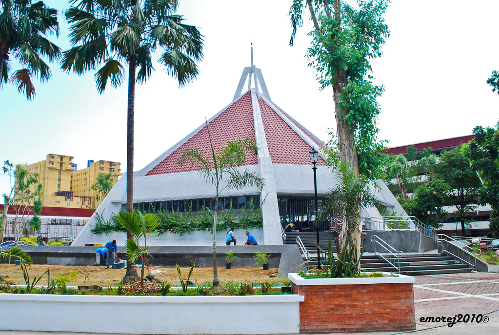
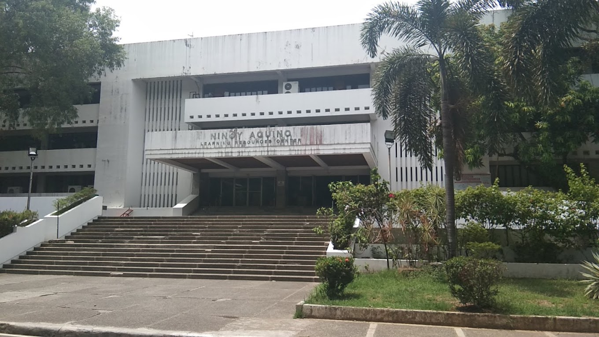

More 360 Photos

PUP Interfaith Chapelmore_vert
PUP Interfaith Chapelclose
The PUP Interfaith Chapel is a place of worship for students of all faiths. It is a quiet and peaceful space where students can come to pray, meditate, or simply relax.

Lagoonmore_vert
Lagoonclose
The PUP (Polytechnic University of the Philippines) Lagoon, for some, was just an ordinary mossy creek with trees around and birds chirping for drama; but this is something special for every PUPian. This was probably the most hung-out place compared to the rest of the spot in PUP. This was like a waiting area for students while waiting for their next class. A picnic area during breaks. A place for students to brainstorm for group projects. A relaxing area where you can catch some sleep. Lastly, where lovers stay upon the strike of darkness! The lagoon is indeed a defining landmark of the campus.

Apolinario Mabini Shrinemore_vert
Apolinario Mabini Shrineclose
The Apolinario Mabini Shrine is a historic site in Santa Mesa, Manila, Philippines. It is noted for being the residence of Filipino military leader Apolinario Mabini who figured in the Philippine Revolution.

PUP Obeliskmore_vert
PUP Obeliskclose
The PUP Mabini Monument is a towering obelisk that stands in the center of the PUP campus. It is dedicated to Apolinario Mabini, a Filipino revolutionary leader and statesman.
PUP Charlie Del Rosario Buildingmore_vert
PUP Charlie Del Rosario Buildingclose
The Charlie Del Rosario Building is a structure dedicated to the first victim of the Marcos Regime.

Ninoy Aquino Librarymore_vert
Ninoy Aquino Libraryclose
The Ninoy Aquino Library and Learning Resources Center is the library system of the Polytechnic University of the Philippines composed of libraries providing services to the PUP System. Its headquarters is in the building of the same name, located in Manila, Philippines.